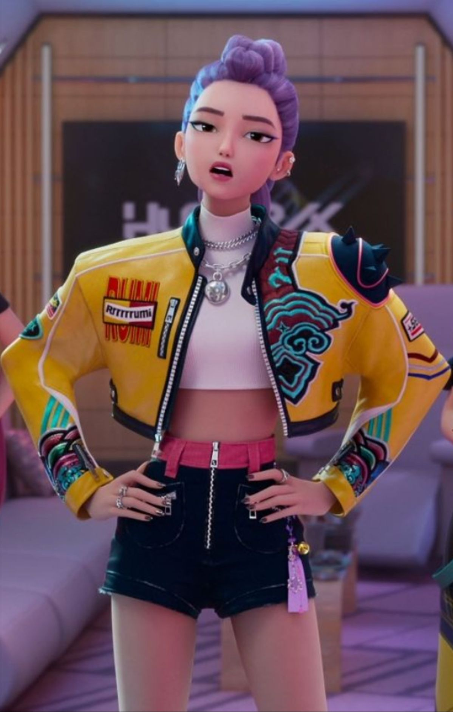

About Our Candidate
Short Bio: Rumi has established herself as one of the best and admired demon hunters in the Huntrx universe. Being recognized because of her uncompromising bravery, tactical skillfulness, and sincerity in serving both human and demon society, she has become a role model of a new generation of leaders.
Leadership Experience: Rumi has always been strategic and morally upright in the course of her career to attain the qualities of an effective leader. Her exceptional skills to think of a situation and look at it through a variety of lenses are coupled with her history of making difficult choices when the situation demands it, which made her incredibly qualified to lead our universe to a calmer future.
You want to know more about the background and achievements of Rumi? Read her elaborate Wiki page to find out more about her adventures and achievements.
Platform & Vision
Empowering Inter-Species Relations: The management of Rumi will focus on maintaining a good relationship between human and demon communities through a series of diplomatic relations. With the help of better communication channels, joint programs and so on, we will be able to get out of the historic tension towards the real cooperation and understanding.
Universal Safety and Rights: All creatures in Huntrx universe (irrespective of species) are entitled to equal protection and enjoyment of the law and the freedom to pursue their ambitions without any fear. The broad-based safety program will make sure that the human beings and the demons are able to live safe and preserve their cultural identities.
Hunter Organization Reform: It is time to change our hunter organization to the 21 st century. In our reform scheme, we will have reformed training protocols, better equipment and technology, better communication systems and better coordination of various hunter divisions in order to make them as effective as possible.
Unity Through Diversity: The Huntrx universe is strong due to its diversity. Instead of letting the differences create a rift, the vision presented by Rumi is appreciative of the individual contributions that each community has made towards our future. We can create an actual unified society through education, cultural exchange schemes and through the inclusion of all in policy making..
We can build a Huntrx universe where collaboration will win over competition, and all living beings will be able to prosper.